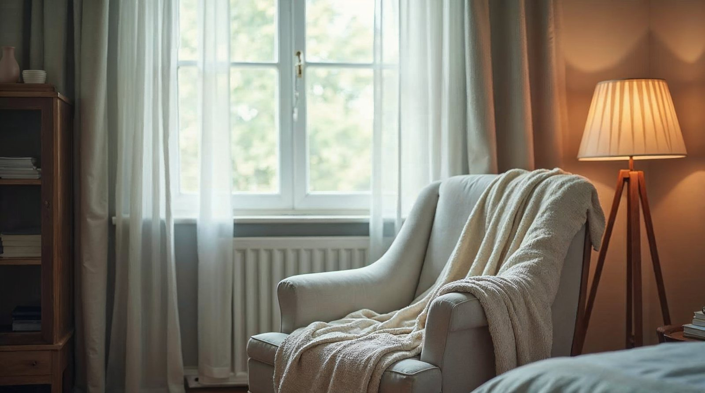

이종호 한의사 감수좋은꿈참사랑한의원 대표원장 (한의사 면허번호 19769)발행 2026-11-26 · 수정 2026-11-26
이 글의 차례
점심시간, 샌드위치를 한 입 크게 베어 물려는데 턱이 '딱' 하고 걸립니다. 귀 바로 앞에서 소리가 나고, 입이 생각만큼 벌어지지 않습니다. 오후 내내 관자놀이가 묵직하고, 저녁에 질긴 고기를 씹다가 결국 젓가락을 내려놓습니다. 아침에 일어나면 턱이 뻐근하고 이가 시큰한 날도 늘었습니다.
이렇게 입을 벌리거나 씹을 때 귀 앞이 아프고, 소리가 나고, 입이 걸리는 느낌이 있다면 턱관절 장애를 먼저 살펴봅니다. 턱관절 장애는 귀 앞에 있는 턱관절과 그 주변의 씹는 근육, 관절 안의 작은 연골판(관절원판)에 무리가 쌓여 생기는 불편을 함께 부르는 말입니다.
턱관절 장애는 흔히 볼 수 있고, 생활 습관을 살피면서 시간을 두고 지켜보는 경우가 많다고 알려져 있습니다.
진료실에서 이런 말씀을 자주 듣습니다. "소리가 나는 건 오래됐는데, 요즘은 아파서 밥 먹기가 겁나요." 어떤 분은 하품을 하다가 턱이 빠질까 봐 손으로 턱을 받치는 버릇이 생겼다고 하십니다. 하루 세 번 밥을 먹고, 말을 하고, 웃는 일이 모두 턱을 쓰는 일이라 불편이 생각보다 크게 다가옵니다.
왜 턱관절에 무리가 쌓일까요
턱관절은 우리 몸에서 가장 바쁜 관절 가운데 하나입니다. 씹고, 말하고, 삼키고, 하품하는 동안 하루에도 수천 번 움직입니다. 귀 앞에 손가락을 대고 입을 벌려 보면 둥근 뼈가 앞으로 미끄러져 나오는 것이 느껴지는데, 그 사이에서 작은 연골판이 쿠션 역할을 합니다.
이 연골판이 제자리에서 조금 밀려나 있다가 입을 벌릴 때 제자리로 돌아오면 '딱' 하는 소리가 납니다. 소리만 나고 아프지 않다면 지켜보는 경우가 많지만, 통증이 함께 오거나 입이 걸려 벌어지지 않는다면 살펴야 할 신호입니다.
턱관절에 무리를 주는 습관은 생각보다 가까이 있습니다. 집중할 때 이를 꽉 무는 버릇, 자면서 이를 가는 것, 한쪽으로만 씹는 습관, 턱을 괴는 자세, 껌이나 오징어처럼 질긴 음식을 오래 씹는 것, 고개를 앞으로 내밀고 화면을 보는 자세가 대표적입니다.
마음의 긴장도 턱에 고스란히 실립니다. 바쁘고 예민한 시기에는 자기도 모르게 어금니를 물고 지내는 시간이 길어집니다. 그래서 시험이나 마감, 큰일을 앞둔 무렵에 턱 통증이 심해졌다는 말씀이 많습니다.
한의학에서는 턱 주변 통증을 볼 때 그 자리만이 아니라 목과 어깨로 이어지는 근육의 긴장, 잠과 소화, 마음의 긴장을 함께 봅니다. 턱은 얼굴에 있지만 몸 전체의 긴장이 모이는 자리이기도 하기 때문입니다.
치통, 귀 질환, 삼차신경통과는 어떻게 다를까요
치통과 잇몸 문제
어금니 쪽이 아프면 턱관절인지 이인지 헷갈리기 쉽습니다. 차갑거나 뜨거운 것에 이가 시리고, 특정한 이를 두드리면 아프다면 치과 확인이 먼저입니다. 반대로 이를 꽉 무는 버릇 때문에 여러 이가 함께 시큰한 경우도 있어, 치과와 함께 살피는 것이 좋습니다.
귀 질환
턱관절은 귀 바로 앞에 있어서 턱이 아픈데 귀가 아프다고 느끼는 분이 많습니다. 귀가 먹먹하거나 소리가 울리는 느낌이 함께 오기도 합니다. 다만 귀에서 진물이 나거나 열이 나고 잘 들리지 않는다면 이비인후과 확인이 필요합니다.
삼차신경통
삼차신경통은 얼굴에 몇 초씩 전기가 오듯 찌르는 통증이 세수나 양치 같은 가벼운 자극에 튀어 오릅니다. 턱관절 통증은 대개 둔하고 뻐근하며 씹거나 입을 벌릴 때 심해진다는 점이 다릅니다.
침샘과 염증
귀 아래나 턱 밑이 붓고 열이 나며 식사 때 더 아프다면 침샘 염증일 수 있고, 이가 아프면서 얼굴이 붓는다면 치아 뿌리 쪽 염증일 수 있습니다. 이런 경우는 치과나 이비인후과 진료가 먼저입니다.
예를 들면 이런 경우입니다
실제 어느 분의 사연이 아니라, 진료실에서 자주 듣는 모습을 바탕으로 그려 본 장면입니다.
예를 들어 하루 종일 모니터 앞에서 고개를 내밀고 일하며 집중할 때마다 어금니를 무는 직장인이라면, 오후가 되면 관자놀이와 턱이 함께 뻐근해지기 쉽습니다. 이럴 때는 턱만이 아니라 목과 어깨의 긴장, 화면 높이를 같이 봅니다.
시험 기간에 아침마다 턱이 뻐근하고, 가족에게 밤에 이 가는 소리가 난다는 말을 들은 학생도 있습니다. 이럴 때는 잠드는 시각과 잠들기 전 습관, 시험 걱정으로 얕아진 잠을 함께 여쭙니다.
한쪽 어금니를 치료한 뒤 반대쪽으로만 씹는 습관이 굳어 그쪽 턱이 아파졌다는 분도 계십니다. 이럴 때는 치과 치료가 끝났는지 확인하고, 양쪽으로 나누어 씹는 연습을 함께 정합니다.
소리만 나는 턱과 아픈 턱
턱에서 소리가 난다고 모두 치료가 필요한 것은 아닙니다. 소리만 나고 아프지 않으며 입도 잘 벌어진다면 생활 습관을 살피며 지켜보는 경우가 많습니다. 실제로 소리가 나는 턱을 가진 분은 생각보다 많습니다.
살펴야 할 때는 소리와 함께 통증이 오거나, 입이 걸려 벌어지지 않거나, 벌어진 입이 잘 다물어지지 않는 경우입니다. 소리가 나다가 어느 날 소리가 멎으면서 입이 덜 벌어진다면 연골판이 돌아오지 못하고 걸린 상태일 수 있어 진찰 때 꼭 말씀해 주세요.

턱과 목, 어깨는 한 줄로 이어져 있습니다
턱이 아파서 오신 분의 어깨를 짚어 보면 대개 돌처럼 굳어 있습니다. 턱을 여닫는 근육은 관자놀이와 귀 앞을 지나 목과 어깨 근육과 서로 힘을 주고받습니다. 고개가 앞으로 나오면 턱은 뒤로 당겨지고, 그만큼 관절에 부담이 실린다고 알려져 있습니다.
그래서 저는 턱만 보지 않고 앉은 자세와 화면 높이, 베개 높이까지 함께 여쭙니다. 턱의 불편이 생긴 자리와 그 불편이 쌓인 자리가 다를 수 있기 때문입니다.
말과 표정에도 턱이 쓰입니다
하루 종일 말을 많이 하는 일을 하시는 분은 저녁이 되면 턱이 묵직하다고 하십니다. 전화 상담, 강의, 판매처럼 말이 곧 일인 분들입니다. 억지로 웃는 표정을 오래 짓는 것도 턱과 볼의 근육을 지치게 합니다.
말하는 사이사이 입을 살짝 벌려 턱을 쉬게 하고, 물을 한 모금 마시는 틈을 일정에 넣어 보세요. 작은 쉼이 하루 끝의 뻐근함을 덜어 줄 수 있습니다.
먼저 이렇게 여쭙니다
처음 오시면 저는 대략 이런 순서로 여쭙습니다. 기억나는 것부터 말씀해 주셔도 괜찮습니다.
- 아픈 쪽은 어느 쪽이고, 귀 앞인가요, 관자놀이나 볼 쪽인가요?
- 입을 벌리면 손가락 몇 개가 들어가나요? 벌릴 때 걸리거나 비뚤어지나요?
- 소리는 언제부터 났나요? 최근 소리가 멎으면서 덜 벌어지지는 않았나요?
- 아침에 턱이 뻐근한가요? 자면서 이를 간다는 말을 들은 적이 있나요?
- 한쪽으로만 씹거나, 턱을 괴거나, 껌을 자주 씹는 습관이 있나요?
- 최근 치과 치료를 받았거나, 넘어지거나 부딪친 일이 있나요?
통증만이 아니라 하루 중 언제 턱을 쓰는지, 언제 힘이 들어가는지를 함께 여쭙습니다. 턱의 불편은 대개 하루의 습관 속에서 쌓이기 때문입니다.
일상에서 먼저 해 볼 수 있는 것
턱을 아끼면서 쉬게 해 주는 요령입니다. 지금 할 수 있는 것 하나부터 골라 보세요.
- 입술은 가볍게 다물고, 위아래 이는 닿지 않게, 혀끝은 윗니 뒤 입천장에 두기
- 질기거나 딱딱한 음식은 잘게 썰고, 양쪽으로 나누어 천천히 씹기
- 하품할 때는 주먹을 턱 아래에 가볍게 대어 입이 크게 벌어지지 않게 하기
- 턱 괴기, 엎드려 자기, 껌 오래 씹기 줄이기
- 뻐근한 날은 미지근한 수건을 귀 앞에 10분쯤 대기
- 화면을 눈높이로 올리고, 고개를 앞으로 내밀지 않기
가장 먼저 권하는 것은 '이가 닿지 않게 두기'입니다. 우리 위아래 이는 씹고 삼킬 때를 빼면 하루 대부분 살짝 떨어져 있는 것이 편한 자리라고 알려져 있습니다. 모니터나 휴대폰 화면 구석에 작은 스티커를 붙여 두고, 볼 때마다 이를 떼고 있는지 확인해 보세요.
자면서 이를 가는 것은 마음대로 멈추기 어렵습니다. 치과에서 밤에 끼우는 장치를 상의하는 분도 많습니다. 잠들기 전 한 시간은 화면을 내려놓고 어깨와 턱의 힘을 빼는 시간으로 두면 조금 도움이 될 수 있습니다.
식탁에서 할 수 있는 작은 배려
턱이 아픈 시기에는 메뉴를 조금 바꾸는 것만으로도 식사가 편해집니다. 깍두기 대신 무나물, 오징어볶음 대신 생선조림, 바게트 대신 부드러운 빵처럼 씹는 힘이 덜 드는 쪽으로 골라 보세요. 사과는 얇게 썰고, 고기는 결 반대로 잘게 썰면 한결 수월합니다.
크게 한 입 베어 무는 햄버거나 김밥 끝자락은 입을 크게 벌려야 해서 턱에 부담이 됩니다. 칼로 잘라 작게 드시고, 식사 시간에 쫓기지 않도록 여유를 두시길 권합니다.
한의원에서 함께 살필 수 있는 경우
- 턱 통증과 함께 목과 어깨, 관자놀이가 늘 굳어 있는 경우
- 긴장하거나 잠이 얕은 시기에 턱 통증이 심해지는 경우
- 치과 확인을 받았고, 근육 긴장과 생활 습관을 함께 살피고 싶은 경우
- 한쪽으로만 씹는 습관과 자세 때문에 턱과 목이 함께 불편한 경우
좋은꿈참사랑한의원에 처음 오시면 치과 진료 여부와 지금 불편을 먼저 확인합니다. 그다음 양손을 올려 달라고 말씀드리고 맥을 짚으며 잠과 소화, 긴장, 대소변을 여쭙습니다.
진찰 뒤 필요하다고 판단되면 침이나 추나를 상의합니다. 턱 주변의 씹는 근육과 함께 목과 어깨로 이어지는 근육의 긴장을 살피는 경우가 많고, 입을 벌리는 범위와 통증을 보며 조심스럽게 정합니다. 필요하면 초음파로 턱 주변 근육과 관절 부위를 함께 봅니다.
긴장과 얕은 잠이 함께 있다면 진찰 뒤 한약을 상의하기도 합니다. 드시는 약이 있다면 모두 알려 주세요. 치과에서 장치나 치료를 받고 계시다면 그대로 이어 가시도록 안내합니다.
다시 오시면 지난번 이후 입이 얼마나 벌어지는지, 아침 뻐근함은 어떤지, 이를 떼고 지내는 연습은 해 보셨는지부터 이어서 여쭙습니다.
잠자리에서 턱을 아끼는 법
엎드려 자거나 한쪽 볼을 베개에 깊이 묻고 자면 턱이 한쪽으로 밀린 채 몇 시간을 보내게 됩니다. 바로 누워 자는 것이 어렵다면 옆으로 누울 때 베개 높이를 어깨 너비에 맞춰 목과 턱이 비틀리지 않게 해 보세요. 아침에 턱이 뻐근한 날이 줄어드는지 기록과 함께 지켜보시길 권합니다.
잠들기 직전까지 휴대폰을 보며 고개를 숙이고 있으면 목과 턱이 긴장한 채로 잠에 들게 됩니다. 불을 끄기 전 몇 분은 화면을 내려놓고, 어깨를 천천히 올렸다 내리며 턱의 힘을 빼 보세요.
이렇게 기록해 오시면 상담이 쉬워집니다
턱은 하루의 습관이 그대로 남는 자리입니다. 2주만 적어 보세요.
- 아침에 일어났을 때 턱 뻐근함 정도(0~10)
- 통증이 심해진 때와 그때 하던 일(식사, 업무 집중, 통화, 운전)
- 입을 벌렸을 때 들어가는 손가락 개수(하루 한 번 같은 시각에)
- 소리가 나는 쪽과 때, 걸리는 느낌이 있었는지
- 잠든 시각과 깬 시각, 이 가는 소리를 들었다는 말이 있었는지
- 질긴 음식이나 껌을 씹은 날
손가락 개수를 매일 같은 시각에 재 두면 입이 벌어지는 범위가 어떻게 달라지는지 한눈에 보입니다.
이런 증상은 먼저 확인이 필요합니다
- 입이 벌어진 채로 다물어지지 않는 경우
- 턱 주변이나 귀 아래가 붓고 열이 나는 경우
이런 신호가 있으면 한의원보다 가까운 병원이나 응급실을 먼저 찾으세요.
밥을 먹는 일조차 조심스러워지면 하루가 참 고단해집니다. 그동안 잘 버텨 오셨습니다. 서두르지 않고, 이를 떼고 지내는 작은 습관 하나부터 같이 시작해 보겠습니다. 다음에 오시면 아침에 일어났을 때 턱이 어땠는지부터 여쭙겠습니다.
함께 읽으면 좋은 글
- 입을 벌릴 때 턱에서 소리가 나고 불편하면 어떻게 살피나요?
- 스트레스를 받으면 뒷목이 당기고 머리가 아픈 긴장성 두통은 어떻게 살피나요?
- 모니터를 오래 보고 나면 눈이 뻑뻑하고 이마와 관자놀이가 아플 때는 어떻게 하나요?
- 거북목과 라운드숄더는 집에서 어떤 스트레칭을 해 볼 수 있나요?

여쭙는 것
- 아픈 쪽은 어느 쪽이고, 귀 앞인가요, 관자놀이나 볼 쪽인가요?
- 입을 벌리면 손가락 몇 개가 들어가나요? 벌릴 때 걸리거나 비뚤어지나요?
- 소리는 언제부터 났나요? 최근 소리가 멎으면서 덜 벌어지지는 않았나요?
생활에서 해 볼 것
- 입술은 가볍게 다물고, 위아래 이는 닿지 않게, 혀끝은 윗니 뒤 입천장에 두기
- 질기거나 딱딱한 음식은 잘게 썰고, 양쪽으로 나누어 천천히 씹기
- 하품할 때는 주먹을 턱 아래에 가볍게 대어 입이 크게 벌어지지 않게 하기
한의원에서 함께 살필 것
- 턱 통증과 함께 목과 어깨, 관자놀이가 늘 굳어 있는 경우
- 긴장하거나 잠이 얕은 시기에 턱 통증이 심해지는 경우
- 치과 확인을 받았고, 근육 긴장과 생활 습관을 함께 살피고 싶은 경우
먼저 확인이 필요한 신호
- 입이 벌어진 채로 다물어지지 않는 경우
- 턱 주변이나 귀 아래가 붓고 열이 나는 경우
한눈에 보는 표
| 구분 | 핵심 |
|---|---|
| 여쭙는 것 | 아픈 쪽은 어느 쪽이고, 귀 앞인가요, 관자놀이나 볼 쪽인가요? 입을 벌리면 손가락 몇 개가 들어가나요? 벌릴 때 걸리거나 비뚤어지나요? |
| 생활에서 해 볼 것 | 입술은 가볍게 다물고, 위아래 이는 닿지 않게, 혀끝은 윗니 뒤 입천장에 두기 질기거나 딱딱한 음식은 잘게 썰고, 양쪽으로 나누어 천천히 씹기 |
| 한의원에서 함께 살필 것 | 턱 통증과 함께 목과 어깨, 관자놀이가 늘 굳어 있는 경우 긴장하거나 잠이 얕은 시기에 턱 통증이 심해지는 경우 |
| 먼저 확인이 필요한 신호 | 입이 벌어진 채로 다물어지지 않는 경우 턱 주변이나 귀 아래가 붓고 열이 나는 경우 |
자주 묻는 질문
턱에서 소리만 나고 아프지 않은데 진료를 받아야 하나요?
소리만 나고 아프지 않으며 입이 잘 벌어진다면 생활 습관을 살피며 지켜보는 경우가 많습니다. 통증이 생기거나, 입이 걸리거나, 소리가 멎으면서 입이 덜 벌어진다면 확인을 받아 보세요.
턱관절이 아플 때 치과와 한의원 중 어디를 먼저 가나요?
이가 시리거나 맞물림이 달라졌거나 입이 다물어지지 않는다면 치과가 먼저입니다. 치과 확인을 받았고 근육 긴장과 잠, 자세를 함께 살피고 싶다면 한의원 진료를 함께 받으실 수 있습니다.
턱에 침이나 추나를 해도 괜찮나요?
진찰로 입이 벌어지는 범위와 통증, 먼저 확인이 필요한 신호가 없는지 살핀 뒤에 정합니다. 턱만이 아니라 목과 어깨의 긴장을 함께 살피는 경우가 많습니다.
껌을 씹으면 턱 운동이 되지 않나요?
턱이 아픈 시기에 껌을 오래 씹으면 관절과 근육에 무리가 쌓일 수 있습니다. 불편이 있는 동안은 줄이시길 권합니다.
자면서 이를 가는 것은 어떻게 하나요?
마음대로 멈추기 어려워 치과에서 밤에 끼우는 장치를 상의하는 분이 많습니다. 한의원에서는 이를 갈게 만드는 긴장과 얕은 잠을 함께 살핍니다.
좋은꿈참사랑한의원은 재진 때 지난번 이야기부터 이어서 여쭙니다. 진료시간과 예약은 오시는 길에서 확인하세요.
어디서 상담받을 수 있나요?
좋은꿈참사랑한의원은 서울 동작구 만양로2길 2 신성빌딩 3층·5층(서울 동작구 상도동, 7호선 상도역 3번 출구 근처)에 있습니다. 한의사 3명(이종호 대표원장, 조영기 수석진료원장, 정원영 진료원장)이 진료합니다. 진료시간은 평일 09:30~20:00(점심 13:00~14:00), 토·일·공휴일 09:30~15:00이며, 방문 전 전화로 확인을 권합니다. 예약은 네이버 예약, 카카오톡 상담, 전화 02-815-7510로 받습니다.
이 글은 일반적인 건강 정보이며 개인의 진단이나 치료를 대신하지 않습니다. 증상이 있거나 복용 중인 약이 있다면 진료를 통해 확인하세요. 치료 효과는 개인마다 다를 수 있습니다.
작성 기준: 일반적으로 알려져 있는 건강 정보를 참고해 정리했습니다(대표원장 감수). 증상 기록은 1~2주 동안 하루 1회, 비슷한 시간에 적어 오시면 지난 상태와 비교하기 쉽습니다.